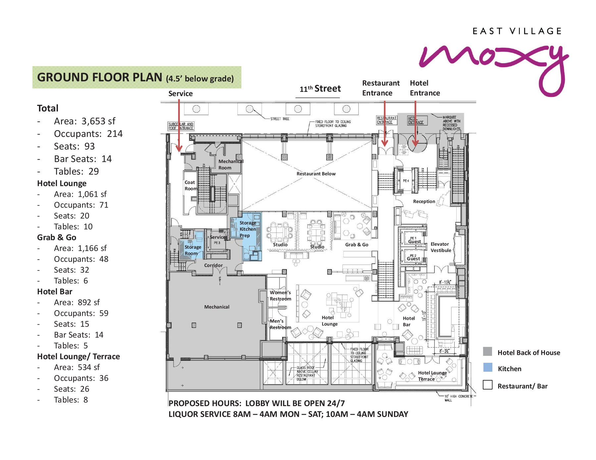

MOXY EAST VILLAGE · NEW YORK
Where should a delivery robot wait?Test the space guests and robots share, then evolve the floor plan.
Inspect an agent to see its field of view, private spatial map, and remembered landmarks.
SITE & SEMANTIC MODEL
This study uses the ground-floor relationships in a 2018 public filing for 112 East 11th Street, New York. The plan locates the guest entrance, reception, lifts, bar, lounge, studios, kitchen prep and service corridor.

Each agent has a metric world position and a room reference. Straight-line distance and shortest walkable distance describe different spatial relationships. Guests try to reach their destination. Robots pick up in the fixed kitchen, deliver to a public-room handoff, then return to a movable base.
The robot envelope references PUDU’s FlashBot Max, 538 × 534 × 1,052 mm, with a published cruise range of 0.5–1.2 m/s. Our circular body and movement rules simplify this hardware.
Manufacturer robot specifications
The digitized plan is approximate. Furniture, sensor ranges, robot demand, movement rules and the tested interventions are research assumptions. The model evaluates common-floor circulation and excludes elevator travel.
Read the semantic model
NYC Community Board 3 source filing
FINAL PROJECT MATERIALS
Use this lab to create a floor arrangement, compare human and robot performance, and develop another generation from your chosen candidate.
A physical, dynamic, multi-agent environment with deterministic seeded demand. The designer selects successive layout options. Historic real-world plan data supplies the secondary function.